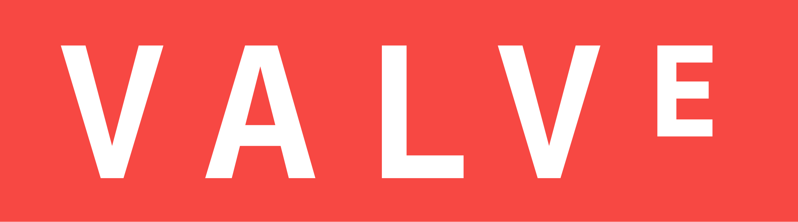
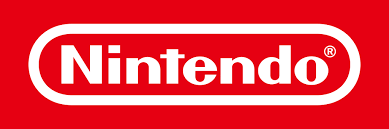

As a student here, I am studying in the field of game design and am taking several classes related to that. As such, my career would want to be one involving the design process of games, more specifically the programming side of things. I’m no stranger to coding, although I am currently still in the process of learning various game engines such as Unity, GameMaker, and Unreal. I want to become proficient in Unreal specifically since that is currently the common industry standard across many game companies, and if it’s not in use, its concepts can be transferred and applied to other engines. My ideal dream job would allow me to get close to the mechanics and really tinker at them.
Link to position: https://www.valvesoftware.com/en/jobs?job_id=63

Valve is one of the most recognizable and prominent developers in the industry. They’ve created some of the most critically acclaimed games of all time, and are the primary people behind the creation of the digital PC marketplace Steam. As such, working for them would do wonders for my portfolio, and being involved in the process of their games would be awesome. As the position is game design related, I would be a natural fit for it, as the skillset required for it would be something that I would fit the bill in.
Link to position: https://careers.nintendo.com/job-openings/listing/250000005D.html?src=JB-10320

This one is the definition of a dream job, because, come on, it’s Nintendo. They’ve made some of the most famous and greatest games of all time. This is located in Washington so it wouldn’t be the true Nintendo, but it’d be the most realistic approach to working with them. This is a senior position, so I’d need a lot of experience to land it, but I think it would fit in with my developing skillset due it being so involved in the coding process, such as debugging and offering solutions to issues that come up, along with testing mechanics and the like. It sounds like my kind of job, if I’m honest.
Link to position: https://www.epicgames.com/site/en-US/careers/jobs/5660437004
Similar to Nintendo, this one is a senior position for Epic Games. These are the people behind the hit game Fortnite and are the creators and developers of the Unreal Engine, which is becoming one of the industry's standard game engines. The listing specifies working to develop collaborations between Fortnite and other intellectual properties, which is something that sounds interesting to take part in. I would require experience to land the job, but I think I can eventually achieve this one. Unreal Engine is one of the engines I am most proficient with, and I feel like if I keep at the pace I’m going with learning it, and really understand how it works and its potential, I think this job would be a good fit for me.